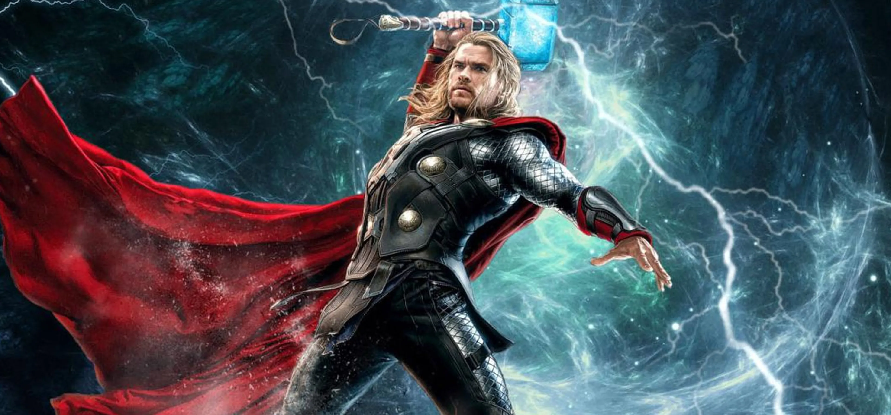
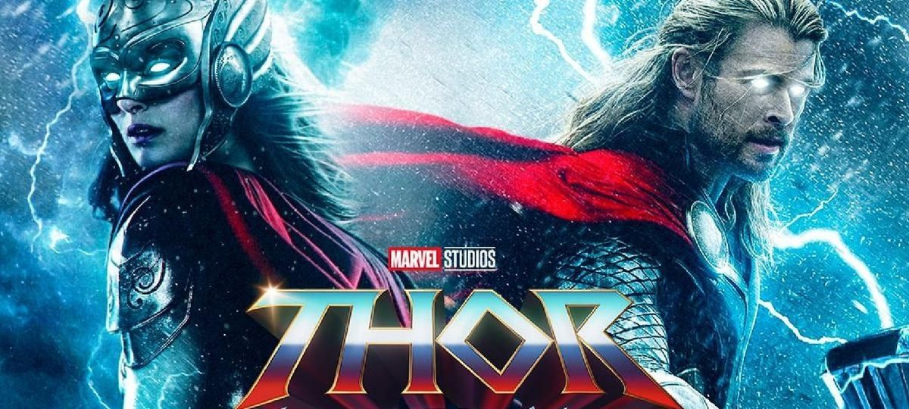
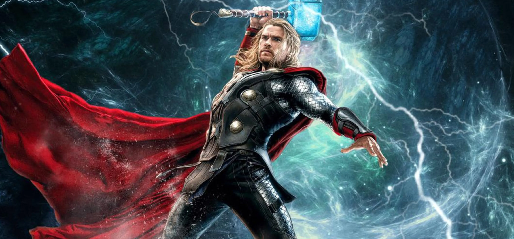
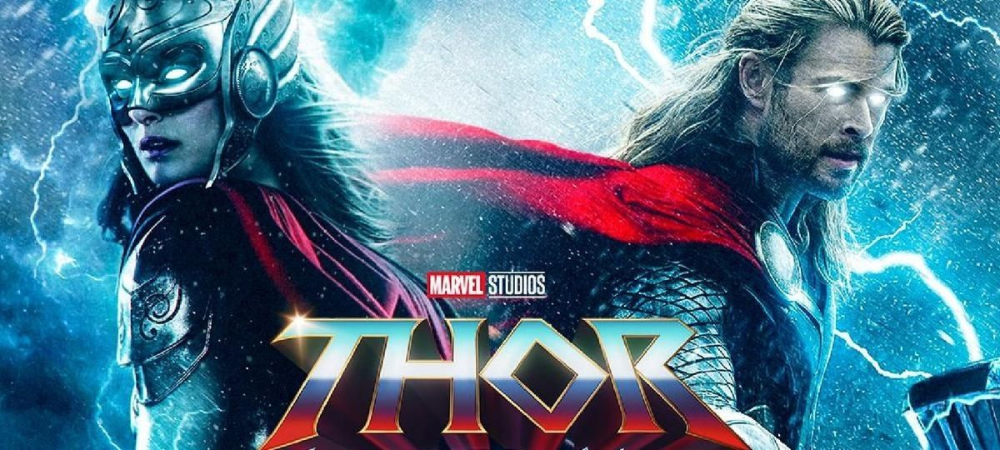

Esto es un club de Thor , Bienvenidos al Reino del Trueno!
Thor es un personaje ficticio de cómic que aparece en las publicaciones de Marvel Comics. Fue creado por el escritor Stan Lee, el guionista Larry Lieber y el dibujante Jack Kirby. Su primera aparición fue en "Journey into Mystery" #83 en agosto de 1962.
Origen Divino:
Thor es el dios del trueno en la mitología nórdica y proviene de Asgard, uno de los Nueve Reinos en el cosmoverse de Marvel. Es hijo de Odín, el rey de Asgard, y de Jord (también conocida como Gaea), la diosa de la Tierra. Desde joven, Thor mostró habilidades sobresalientes y fue considerado digno de empunar Mjolnir, su icónico martillo encantado.
Destierro y Aprendizaje:
Como castigo por su arrogancia y falta de humildad, Odín destierra a Thor a la Tierra y lo transforma en un mortal sin sus poderes divinos. Thor, ahora conocido como Donald Blake, aprende valiosas lecciones sobre la humanidad durante este período de destierro.
Retorno a la Grandeza:
Después de demostrar su valía y comprender la responsabilidad que conlleva su poder, Thor recupera sus habilidades divinas y regresa a Asgard. Se convierte en un defensor destacado de su reino y sus habitantes, enfrentándose a amenazas tanto místicas como cósmicas.
Martillo Mjolnir:
El arma distintiva de Thor es Mjolnir, un martillo encantado forjado en las fundiciones de Nidavellir. Solo aquellos que sean dignos pueden empuñarlo y obtener los poderes divinos de Thor, incluyendo la capacidad de controlar los elementos, volar y poseer una fuerza sobrehumana.
Miembro de los Vengadores:
Thor se une a los Vengadores, un equipo de héroes que se unen para enfrentar amenazas a escala global y cósmica. Su participación en este equipo lo coloca en el centro de numerosas batallas épicas y contribuye significativamente a la seguridad del universo Marvel.
Relaciones y Alianzas:
A lo largo de sus historias, Thor ha establecido relaciones significativas con otros personajes, como su medio hermano Loki, el guerrero Tres Guerreros, la diosa guerrera Sif y la mortal Jane Foster, quien en algunos cómics asume el manto de Thor.
Adaptaciones a Otros Medios:
Además de los cómics, Thor ha sido un personaje destacado en adaptaciones cinematográficas y televisivas. Chris Hemsworth ha interpretado al personaje en las películas del Universo Cinematográfico de Marvel, donde ha ganado gran popularidad.
Thor es un personaje complejo y fascinante que ha evolucionado a lo largo de los años en los cómics y ha dejado una marca indeleble en la cultura pop como uno de los héroes más emblemáticos de Marvel. Su historia combina elementos épicos de mitología con temas contemporáneos, haciendo de Thor un personaje perdurable y querido por los fanáticos de todo el mundo.
Peliculas
Primera Entrega
Título:"THOR"
Director:Kenneth Branagh
Fecha de Estreno:2011
Sinopsis:
Película no recomendada a menores de 7 años.
Thor (Chris Hemsworth, Los vengadores), príncipe del reino de Asgard, es un poderoso y arrogante guerrero cuya imprudencia desencadena antiguas rencillas en el dominio. Por ello, su padre Odín le envía al planeta Tierra a modo de castigo para que viva como un humano y descubra así el valor de la humildad. Cuando el malvado villano Loki, el más peligroso del universo, intenta invadir la Tierra, tan sólo una persona con fuerza sobrehumana podrá hacerle frente. Thor estará obligado a luchar y aprender así lo que significa ser un héroe de verdad. Todo ello se complica cuando su vida como hombre se ve ligada a la de una guapa científica, Jane Foster (Natalie Portman, Cisne negro).
Thor es una película de superhéroes basada en el personaje homónimo de Marvel Comics, el dios del trueno.
Segunada Entrega
Titulo: "THOR: EL MUNDO OSCURO"
Director: Alan Taylor
Fecha de Estreno: 2013
SINOPSIS:
Película no recomendada a menores de 12 años.
Thor (Chris Hemsworth, Star Trek: En la oscuridad, Blancanieves y la leyenda del cazador) se ve obligado a embarcarse en su viaje más peligroso y al mismo tiempo personal, para enfrentarse a un enemigo que ni siquiera Odin (Anthony Hopkins, 360 - Juego de destinos, El rito) y Asgard son capaces de vencer. La amenaza no es otra que una antigua raza liderada por el malvado Malekith, que quiere sumir al universo entero en la oscuridad. En su viaje, Thor se reencontrará con Jane Foster (Natalie Portman, Caballeros, princesas y otras bestias, Cisne negro) y además, se verá obligado a sacrificar todo aquello que ama por el bien de la humanidad.
Thor: El mundo oscuro es la continuación en la gran pantalla de las aventuras de Thor el Vengador, que lucha constantemente por salvar al mundo y a los Nueve Reinos. Esta película está dirigida por Alan Taylor, reconocido por dirigir series como Juego de Tronos y Bored to Death y el filme Palookaville (1995). Además de los actores mencionados, el reparto cuenta con otros como Tom Hiddleston (Exhibition), Stellan Skarsgård (Un largo viaje), Kat Dennings (Defendor) y Jaimie Alexander (El último desafío).
Tercera Entrega
Titulo : "THOR: RAGNAROK"
Director : Taika Waititi
Fecha de Estreno : 2017
SINOPSIS:
Película no recomendada a menores de 7 años.
Asgard se encuentra en manos de una poderosa amenaza, la despiadada y todopoderosa Hela (Cate Blanchett), que ha robado el trono y ha encarcelado a Thor (Chris Hemsworth), enviándole como prisionero hasta el otro extremo de la galaxia. Sin su martillo, el mítico y poderoso Mjölnir, el Dios del Trueno se encontrará a sí mismo en una carrera contra el tiempo.
En el planeta Sakaar, Thor tendrá que luchar por su vida como un gladiador. Para escapar de su cautiverio, Thor tendrá que resultar vencedor en una competición alienígena, y derrotar a su antiguo aliado y amigo Vengador El increíble Hulk (Mark Ruffalo). Pero, por alguna misteriosa razón, Hulk no recuerda a su compañero Vengador. Claro que, por encima de todo, el objetivo del Dios del trueno será volver a Asgard y parar el Ragnarok, un ciclo de vida y muerte sin fin que podría significar la destrucción total e inminente de la civilización asgardiana.
Esta tercera entrega de la saga Thor de Marvel la dirige Taika Waititi (Lo que hacemos en las sombras, Boy). Sus protagonistas son Chris Hemsworth (Cazafantasmas, Las crónicas de Blancanieves: El Cazador y la Reina del Hielo) como el Dios del Trueno, Mark Ruffalo (Ahora me ves 2, Spotlight) como Bruce Banner/Hulk, Tom Hiddleston (El infiltrado, High-Rise) como Loki, Cate Blanchett (Carol, Blue Jasmine) como Hela, Benedict Cumberbatch (Sherlock, 12 años de esclavitud) como Dr. Stephen Strange, Idris Elba (Caza al asesino, Mandela: del mito al hombre) como Heimdall, Tessa Thompson (Creed: La leyenda de Rocky, Selma) como Valquiria, Jeff Goldblum (Independence Day: Contraataque, Mortdecai) como Grandmaster, Karl Urban (Peter y el dragón, Star Trek: Más allá) como Skurge y Anthony Hopkins (Westworld, Noé) como Odin.

Cuarta Entrega
Titulo :"THOR: LOVE AND THUNDER"
Director : Taika Waititi
Fecha de Estreno : 2022
SINOPSIS :
Película no recomendada a menores de 12 años.
Thor: Love and Thunder retoma la acción tras los sucesos ocurridos en Vengadores: Endgame. El dios del trueno decide retirarse y dejar la vida de superhéroe atrás. Después de abandonar la Nueva Asgard y dejarla en manos de su querida amiga Valquiria, Thor se marcha junto a los Guardianes de la Galaxia en un viaje que le lleva a plantearse su vida y su propia existencia.
Pero este momento no le podrá durar mucho, ya que rápidamente tendrá que volver a la acción para enfrentarse a Gorr, un villano que ha planeado asesinar a todos los dioses. Pero esta no será la única casuística a la que tendrá que hacer frente el dios del trueno, por si fuera poco, su ex Jane Foster, quien ahora es la portadora del Mjölnir, también entra en escena.

 


